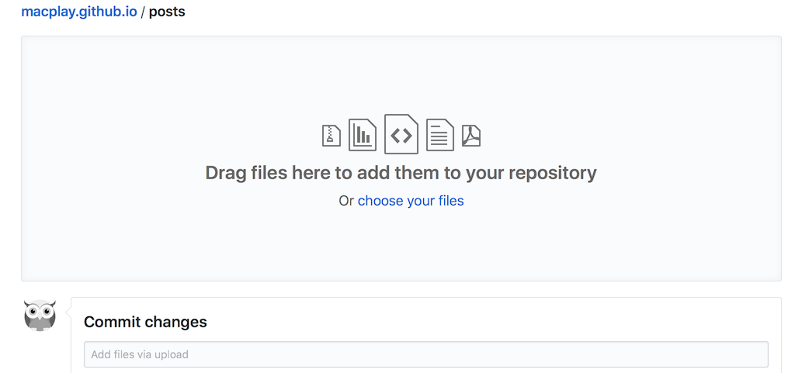

静态博客 Nikola 之写作实践
本文分享 Nikola 博客的写作流程及注意事项，方便读者对最基础的操作--「更新文章」有直观了解。得益于 Nikola 和 TravisCI 的紧密协同，「更新文章」只需把源文件放到指定目录，提交到 GitHub 即可。甚至在没有安装 Nikola 程序的电脑或者手机上也可以随时更新你的文章。
一点背景知识
提示
此小结内容并不影响后续操作，如果不感兴趣的话可以直接跳过。
博客的输出文档和源文件均存放在 此 GitHub 仓库 里面。该仓库有 master 和 src 两个分支，其中 master 分支存放输出文档，由 Nikola 或 TravisCI 管理，不需要我们直接干预； src 分支则存放博客主题、配置文件、markup 文件等，需要关心的目录结构如下：
>>> lt -T -L2 .
├── galleries
│ ├── bing_daily
│ ├── gaosongdezhuzitupian-007.jpg
│ ├── liuthangdeheliutupian-014.jpg
│ └── qiteyanshifengjingtupian-011.jpg
├── listings
│ ├── python_plot
│ └── weibo_util.py
├── posts
│ ├── jing-tai-bo-ke-nikola-zhi-xie-zuo-shi-jian.rst
│ ├── jupyter-notebook-get-started.ipynb
│ ├── markdown-reference.md
│ ├── nikola-internals.rst
│ ├── pygal-charts-get-started.rst
│ ├── quickstart.rst
从上到下的目录分别为「图册」、「代码」、「文章」，清晰明了。对静态博客的管理只需操作 src 分支，具体到「更新文章」则是 posts 目录。对其进行添加／删除／更改等操作就可以， TravisCI 则会负责接下来的所有工作：渲染 markup 文件、重建静态网页、生成缩略图、发布到 master 分支等。提交更改后稍等几十秒钟，即可在博客首页看到新发布的文章。
只需提交 markup 文件！
既然清楚 直接将 markup 文件丢到 src 分支的 posts 目录下 即可完成静态网站的更新，可选的方案就很多了。如果你是非技术型用户，则直接在 GitHub 网页上操作即可。GitHub 官方提供了 markdown、reST 等标记语言的在线预览，新建或者编辑文章不在话下。当然你也可以选择 markup 客户端编辑文章，然后拖放到网页上传。
如果是对技术熟悉的用户，则一般的操作是：本地编辑文章，然后使用 GitHub 客户端或者命令行完成 markup 文件的提交。
一些情况下，电脑或者手机上使用 GitHub 网页端可以成为一个非常有用的备选方案。比如翻看文章或者评论时发现原文有一处比较明显的错误，这时你并不需要像多数静态博客那样：打开电脑 -> 修正错误 -> 重建页面 -> 推送到远端 ——直接使用手机就可以随时随地搞定了。
到目前为止，我们还没有在个人电脑上安装过任何软件。但是如果想要充分体验静态博客的魅力，建议你安装 Nikola，终端输入 pip install 'Nikola[extras]' 等待命令完成即可。
本地运行 Nikola 的一大好处是支持全站预览，对刚开始接触 Nikola 或者 markup 语言的人来说，这是个非常好用的功能。将工作目录切到站点的 src 分支，输入 nikola auto -b 会在默认浏览器打开站点预览，编辑并保存任何文件，浏览器将自动刷新呈现更改。Nikola 的其它命令可通过输入 nikola help 查看。同样地，更改完毕确定发布的话，将其推送到 GitHub 即可。
不要忘记添加 meta 信息
但是，且慢，我们忘记给文章添加 meta 信息了！
和大多数的静态博客一样，Nikola 使用 meta 头来生成博客站点的文章作者、标签、分类等等，同时做一些有趣的事情，比如禁止评论、文章草稿、加密日志等，具体可以参看 Nikola 使用手册的相关部分 1 。
因为一般以「注释」的形式存在，不支持 meta 头的客户端会忽略这些信息，markup 文件仍能得到想要的渲染效果。换言之，meta 信息对 Nikola 来说算是附加的福利。这些福利还是非常重要的。那么现在，调整发布流程为：
添加完 meta 信息后就可以提交最终 markup 文档了。如本文的 meta 信息为（ reStructuredText 文件类型）：
.. title: 静态博客 Nikola 之写作实践 .. slug: jing-tai-bo-ke-nikola-zhi-xie-zuo-shi-jian .. date: 2017-09-20 11:32:34 UTC+08:00 .. tags: nikola, reST, markdown .. category: markdown .. author: macplay
Nikola 支持提交 reStructuredText 、Markdown、Jupyter Notebook 等文件来生成博客文章，不同文件类型的 meta 头略有不同（因为注释语法不同）。推荐使用 nikola new_post -f rest/markdown/ipynb 命令来新建文件，其中 -f arg 用来指定要创建的文档格式。新创建的文件已经包含必要的 meta 信息，只需略作修改就可以了。
Jupyter Notebook 的情况则比较特殊，meta 信息不在文件开头。而且其文件类型（扩展名 .ipynb ）其实是 JSON，如果不想使用文本编辑器来编辑 meta 头的话，可以依次点击 Jupyter Notebook 菜单 Edit - Edit Notebook Metadata 。
总结
至此，对 Nikola 静态博客的写作流程基本就介绍完了。如果你之前用 Markdown 写过一些文章，则只需在文件开头添加 meta 头，并将文档丢到 GitHub 相应目录就完成了博客的发布。至于用何种客户端编辑文档则没有任何限制，所以你尽可以选择自己最喜爱的 Markdown 编辑器。针对几乎没有任何技术背景的读者，也提供了易于上手的工作流程和工具链。
此外，对笔者个人而言，一个重要的特性是 Nikola 支持多种格式的标记语言书写，这使得更高级的页面排版和多作者协作成为可能，关于这一点会在其它博文里展开讨论。
接下来要写的文章：“三十分钟建立一个 Nikola 静态博客”，敬请期待 :)
补充
补充一下 markdown 和 Jupyter Notebook 的 meta 头，方便电脑上没有安装 Nikola 的读者直接粘贴使用：
Jupyter Notebook
"nikola": { "title": "静态博客 Nikola 之写作实践", "slug": "jing-tai-bo-ke-nikola-zhi-xie-zuo-shi-jian", "date": "2017-09-20 11:32:34 UTC+08:00", "tags": "nikola, reST, markdown", "category": "markdown", "author": "macplay" },
Markdown
<!-- .. title: 静态博客 Nikola 之写作实践 .. slug: jing-tai-bo-ke-nikola-zhi-xie-zuo-shi-jian .. date: 2017-09-20 11:32:34 UTC+08:00 .. tags: nikola, reST, markdown .. category: markdown .. author: macplay -->
Markdown 常用的 YAML front matter 也是支持的，毋需任何设置。
--- title: 静态博客 Nikola 之写作实践 slug: jing-tai-bo-ke-nikola-zhi-xie-zuo-shi-jian date: 2017-09-20 11:32:34 UTC+08:00 tags: nikola, reST, markdown category: markdown author: macplay ---
文章链接：https://macplay.github.io/en/posts/jing-tai-bo-ke-nikola-zhi-xie-zuo-shi-jian/
发布/更新于：
版权声明：如无特别说明，本站文章均遵循 CC BY-NC-SA 4.0 协议，转载请注明作者及出处。